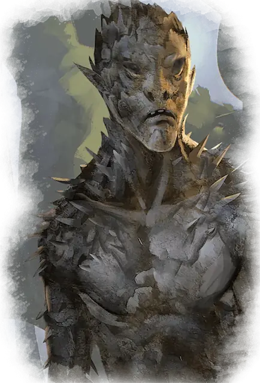

Игольчатая зараза
Needle Blight
Среднее Растение, Нейтральное Злое

Класс Защиты 12 Инициатива +1 (11)
Хиты 16 (3к8 + 3)
Скорость 30 футов
| мод | спас | ||
|---|---|---|---|
| СИЛ | 12 | +1 | +1 |
| ЛОВ | 12 | +1 | +1 |
| ТЕЛ | 13 | +1 | +1 |
| мод | спас | ||
|---|---|---|---|
| ИНТ | 4 | −3 | −3 |
| МДР | 8 | −1 | −1 |
| ХАР | 3 | −4 | −4 |
Иммунитеты Оглохший
Чувства пассивное Восприятие 9, Слепое зрение 60 футов
Языки понимает Общий, но не говорит
Опасность 1/4 (50 опыта; БВ +2)
Действия
Когти. Бросок рукопашной атаки: +3, досягаемость 5 фт. Попадание: 6 (2к4 + 1) Рубящего урона.
Иглы. Бросок дальнобойной атаки: +3, дистанция 30/60 фт. Попадание: 6 (2к4 + 1) Колющего урона.
Бонус мастерства +2
Среда обитания Леса
Сокровища Отсутствуют
Заразы
Растения, порождённые злом
Заразы — нечестивые создания, выросшие из глубоких корней зла. Черты их жутких, скрученных, узловатых тел напоминают человеческие конечности и ужасающие челюсти. Заразы прячутся в зарослях зелени и нападают на всех, кроме Растений.
Хотя эти ужасы способны действовать самостоятельно, обычно они подчиняются породившим их зловещим силам или порочным существам, обуздавшим силу природы. Магия, создавшая заразы, часто влияет и на другую растительность, заставляя терновники, вьюны и корявые деревья захватывать дороги и поля, запруживать колодцы и ручьи, вынуждать животных покидать их среду обитания. Появление этих существ — первый признак надвигающейся волны порчи.
Внешне игольчатая зараза смутно напоминает гуманоида с худыми деформированными конечностями. Неестественная поза и нетвёрдая, шатающаяся походка не позволяют им притвориться ни обычными растениями, ни идущими по лесу путниками. Игольники атакуют замеченных противников терновыми лапами или залпом быстро вырастающих зазубренных иголок.